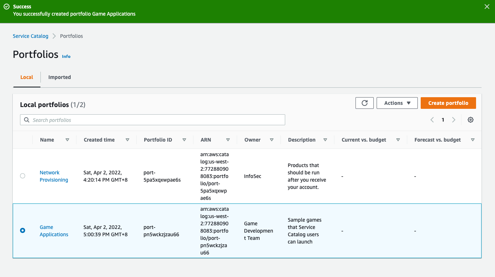
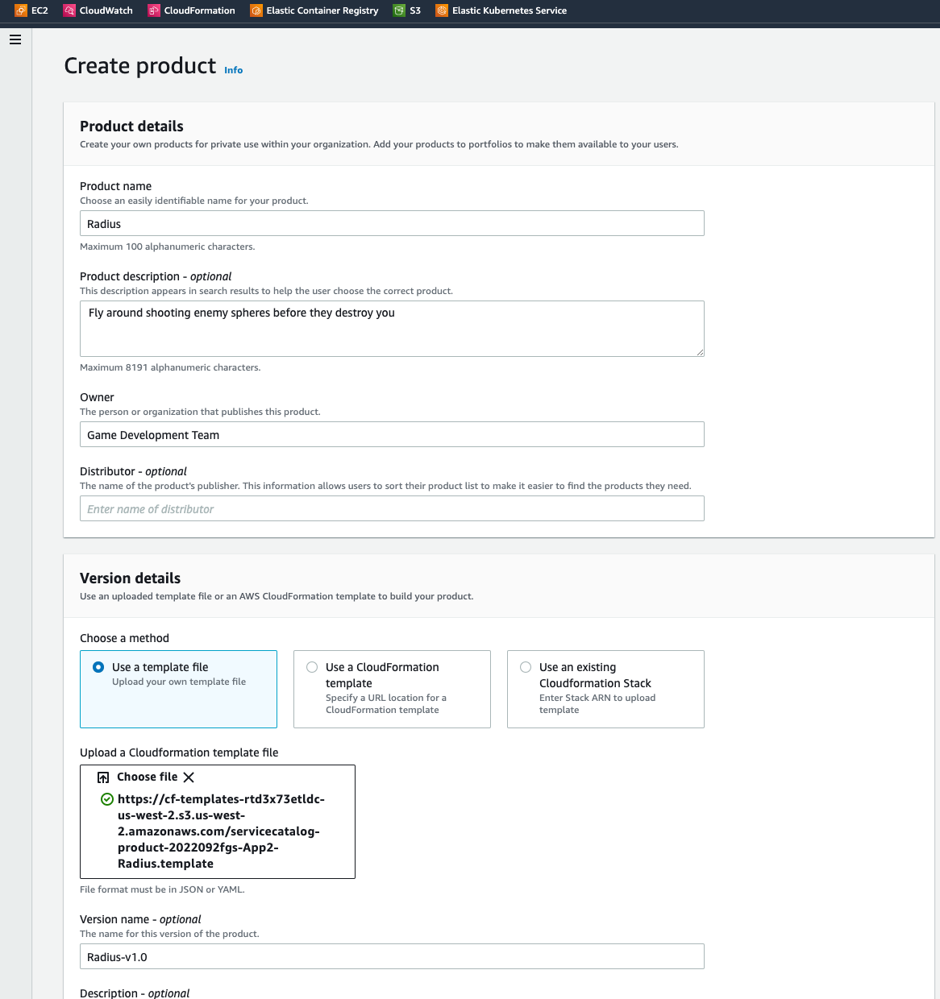
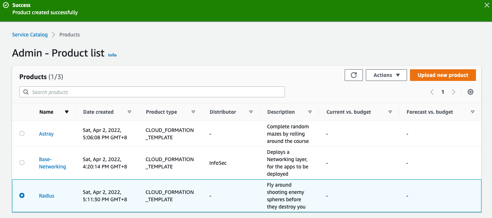

前言
根據大型AWS環境控管神器 | AWS Service Catalog (上)集的說明[4]，我們知道自助式的Service Catalog product/portfolio建立VPC資源，因為Service Catalog 的封裝與版控有助於企業滿足合規[3]與集中之需求，此篇實作如何封裝更多的AWS資源
我們設定一個情境是Game App 所需的環境，Developer 要有S3 bucket website來測試它的App。接下來的步驟是圖1所示步驟，為組織內的最終使用者(user)建立自訂的產品組合(portfolio)
前置作業：
- 要建立這包portfolio，首先是要有Service Catalog 完整的權限
- 故我們需切換至Service Catalog IT管理員
步驟：
- step1: administrator先撰寫好template, 包含parameter
- step2: administrator 將選入aws services
- step3: 建立portfolio，將aws products 帶入portfolio
- step4: administrator設定IAM Role並加到products動作之中
- step5. 最終使用者即可以享受打包後的aws 資源
▌1. 實際操作
step1. 以管理員身份登入
實驗開始前先準備二個User
第一個被控管的名為
ServiceCatalogUser等於是最終使用者- 這個帳號沒有權力建立VPC資源，
第二個是IT管理員
superuser有能力建立AWS Service Catalog products, portfolio
因為要建立這包portfolio，首先是要有Service Catalog 完整的權限
step2. Portfolio | 封裝自助包
進入aws Service Catalog之後，點選Portfolio
一樣可以看到上集文件的 Network Provisioning，但我們這次要建立新的Portfolio，裡面要封裝Game App所需的環境 eg. S3 bucket website
點選Create portfolio
step3. Portfolio設定
命名 Portfolio name: Game Applications
自助包說明 Portfolio description: 此自助包是為Game App部署所需
所署人 Owner: Game Development Team
Portfolio 建立完成

step4. 第二 Service Catalog | Products
Portfolio可以想像是一個箱子，當工程師出門時，一定要帶著他的工具箱，裡頭要放什麼工具和設備都需事前先準備
透過建立Product(工具) 將其置入於 Portfolio (箱子)
以下我們將建立二個products 分別為
Astray，Radius
▌2. 服務準備 | Product
step1. Create product#1
- 進入Product頁面之後，輸入以下必要資訊
- Product name:
Astray - Owner:
Game Development Team - 上傳Template: 資源包括 S3, Lambda
建立完成done
step2. Create product#2
進入Product頁面之後，輸入以下必要資訊
Product name:
RadiusOwner:
Game Development Team上傳Template: Template 資源包括 S3, Lambda, 以及trigger 條件設定

done

step3. 把Products 加入至Portfolio
回到portfolio頁面之下，以add product 方式加入剛才建立的
Astray，Radius
step4. *Astray 加入至 *Game Applications
step5. *Radius 加入至 *Game Applications
step6. 檢視全Products是否在Portfolio之中
▌3. 測試User 發行Portfolio
設定完product, portfolio之後，ServiceCatalogUser還缺一個步驟來完成部署aws的服務，這個東西就是IAM Role，因此portfolio之中的constraints[2]設定是讓ServiceCatalogUser取得特定的IAM Role ，使product順利發行
step1. Create Constraint in Portfolio
於Portfolio之中，有個Constraints的設定，目的在於設定給ServiceCatalogUser
step2. 讓指定的IAM Role，能夠使用Astray product
目的讓指定的IAM Role，能夠使用Astray product
IAM Role ARN:
arn:aws:iam::xxxxx:role/LaunchRole完畢建立Create
設定完launch所需要的Role
▌4. 授權給ServiceCatalogUser
最後一動，把權限指給Service CatalogUser
step1. Role設定
一樣在Service Catalog內操作，請切至Group, roles, and users (不用換到IAM)
step2. Add access
選擇ServiceCatalogUser(一般受管的user) 授權給它
step3. 完成授權
確認授權
▌5. 發行服務測試
此時，注意要切換身份至ServiceCatalogUser(一般受管的user，或稱最終使用者)

step1. 看到2個新建的Products
走到Products頁面之中，就可以看到剛剛管理角度分派的2products:
Radius,Astray
step2. Launch Astray product | 發行服務
這邊記得要帶 IAM Role ARN
因為在Template之中，有採用Lambda，故需要Role來完成滿足部署權限
部署中
圖中可以看到右下status 灰字
CREATE_IN_PROGRESS，代表目前正部署中
step3. 成功部署的Radius Game 一起來大戰一場吧
取得
Output valueURL，進行遊戲測試吧！
step4. 戲戲測試
Developer雖然沒有實現AWS各種Resource權限，但透過ServiceCatelog一樣可以完全環境的部署，且滿足集中化與合規
結論
AWS Service Catalog 是針對需要集中化政策的組織、IT 團隊和受管服務提供者 (MSP) 所開發。它讓 IT 管理員可以發佈和管理 AWS 資源與服務。對於大型組織，它可以提供數以千計使用者佈建雲端資源的標準方法，以確保符合企業標準。
同時也適合小型團隊，團隊中的一線開發管理員可以提供和維護一致的標準開發/測試環境，當然除了Microservice獲得App runtime校準之後，Cloud層面的一致性也同樣不能被忽略。
References
[1] https://aws.amazon.com/tw/servicecatalog/
[2] https://docs.aws.amazon.com/servicecatalog/latest/adminguide/constraints-launch.html
[3] https://docs.aws.amazon.com/servicecatalog/latest/adminguide/service-catalog-compliance.html
大型AWS環境控管神器 | AWS Service Catalog (下) | 打包篇